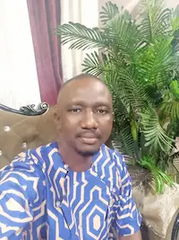

Umaru Bayoh | WDD 130

Hello! My name is Umaru Bayoh. I am from Freetown, Sierra Leone, West Africa. I grew up at Wilberforce Barracks in the Western area of Freetown. I attended the Services Primary School (class 1 - 6), Prince of Wales School (form 1 - 6). I am a husband and a father of three children (2 boys, a girl). I thank God for keeping my parents alive to see their grandchildren and to eat the fruit of their labour. When I was coming up, I liked to play football (soccer) and basketball. I like reading, watching football, and jogging on weekends.